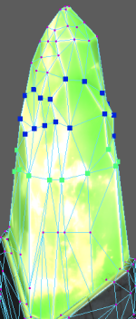
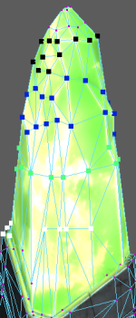

- 选择“显示 > 多边形 > 元数据 > 可视化元数据”(Display > Polygons > Metadata > Visualize Metadata) >
 可设置元数据可视化选项。
可设置元数据可视化选项。
将基于在“元数据可视化选项”(Metadata Visualization Options)中设置的内容显示元数据。
也可以从标记菜单中选择“元数据 > 可视化元数据”(Metadata > Visualize Metadata) > 以打开此窗口。
- 要可视化的流(Stream to visualize)
- 在此下拉列表中将显示属于您的场景的所有元数据流。选择要可视化的流。
注： 也可以直接从标记菜单中的“元数据 > 选择流”(Metadata > Select Stream)选择流。
- 成员(Member)
- 在此下拉列表中将显示属于您选择的流的所有成员。选择要可视化的成员。
注： 也可以直接从标记菜单中的“元数据 > 选择流”(Metadata > Select Stream) > <您的流> 选择成员。
- 方法(Method)
-
可在以下三种模式下可视化元数据：
-
颜色(Color)
显示的颜色范围为 0.0（黑色）到 1.0（白色）。布尔值以白色或黑色显示，而整数和浮点数以灰度显示。向量（3 个整数或 3 个浮点数）显示为 RGB 颜色。
对于具有 2 个浮点数/整数的向量，浮点数/整数值分别映射到 R 值和 G 值。“蓝色”(Blue)值设置为 0。对于单个浮点数/整数，同一值将映射到所有的 RGB。对于具有 4 个或更多个浮点数/整数的数组，仅映射前 3 个值，而忽略所有其他值。
在进行可视化时，与已选定但未指定元数据的顶点/边/顶点面相比，已指定元数据的顶点/边/顶点面显示得更大且更粗。
-
字符串(String)
元数据值显示为组件上方的字符串。
-
光线(Ray)
元数据值显示为从组件中心发射的光线。在其他显示组件（如显示的顶点）的顶部绘制光线。
对于单个浮点数/整数，绘制从组件中心发射并与其垂直的光线。光线的长度表示元数据值，光线的颜色为白色。
对于具有 3 个浮点数/整数的向量，光线的方向表示元数据值，光线的长度表示向量的幅值。例如，元数据值 (1, 1, 1) 和 (2, 2, 2) 都从方向为 (1, 1, 1) 的组件发射光线。但是，表示 (2, 2, 2) 的光线的长度是 (1, 1, 1) 的两倍。对于具有 3 个浮点数/整数的向量，光线的颜色为暗红色。
对于具有 2 个浮点数/整数的向量，在 Z 设置为 0 时，浮点数/整数值分别映射到 X 和 Y 值。对于具有 4 个或更多个浮点数/整数的数组，仅映射前 3 个值，而忽略所有其他值。
-
颜色(Color)
颜色方法
如果选择“颜色”(Color)作为可视化方法，则显示以下选项。
颜色解释来自(Color interpretation from)
可以重新映射颜色范围以控制如何将值表示为颜色。
从以下四个选项中进行选择：
- 0-1
- 0 值将映射到黑色，1 值将映射到白色。所有值都限制在此范围内。此方法对布尔型和浮点型元数据值最有用。
- 0-255
- 0 值将映射到黑色，255 值将映射到白色。所有值都限制在此范围内。此方法对整型元数据值最有用。
- 自动重映射数据范围(Automatically remap data range)
-
Maya 从当前可视化的流中搜索最小值和最大值，并对所有的数据通道使用同一颜色范围。
例如，如果具有两个数据指定，一个具有值 (0.25, 0.5, 1.75)，而另一个具有值 (0.8, 2.0, 1.1)（如下所示），则最小值设置为 (0.25, 0.25, 0.25)，最大值设置为 (2.0, 2.0, 2.0)。
最小值将解释为黑色，而最大值将解释为白色。换句话说，如果现在将元数据值 (0.25, 0.25, 0.25) 和 (2.0, 2.0, 2.0) 添加到上述流，则它们分别显示为黑色和白色。
所有其他值都相对于新的最小值进行解释。例如，向量 (0.25, 0.5, 1.75) 现在相对于 0.25 到 2.0 的比例进行解释，而不是相对于 0 到 1 的比例。R 和 G 值在 0.25-2 比例的低端，而 B 值在 0.25-2 比例的高端。因此，顶点主要显示为蓝色。
同样，按 0.25-2 比例解释时，向量 (0.8, 2.0, 1.1) 具有主导的 G 值。因此，顶点主要显示为绿色。
- 自定义重映射范围(Custom remapping range)
- 根据需要在“下限”(Lower range)和“上限”(Upper range)字段中设置范围值。相同的颜色范围用于所有的数据通道。小于最小值的所有值都显示为黑色，大于最大值的所有值都显示为白色。
在面上启用颜色插值(Enable color interpolation on faces)
在顶点或顶点面上可视化元数据时，可以启用此选项以将颜色外推到顶点/顶点面周围的面。此功能可帮助您更好地了解数据是如何在曲面上分布的。
光线方法
如果选择“光线”(Ray)作为可视化方法，则显示以下选项。
光线长度比例(Ray length scale)
如果您发现表示元数据值的默认光线长度太短或太长，则可以使用此属性缩放它。这是所有光线的通用比例值。